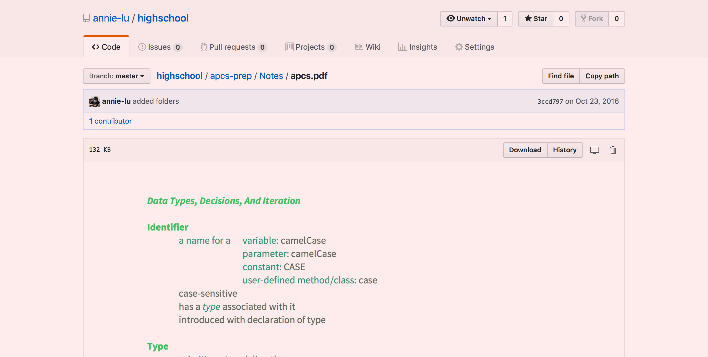

APCS/CMSC131 notes, CMSC351 notes
CMSC250 resources are not shown, because it include private practice problem solutions.
I believe in having thoroughly prepared, organized material for tutoring. This way when students have particular questions, I can quickly provide practice problems and examples. I also can hand out notes and recap emails, so students recall/understand everything taught during tutoring sessions.